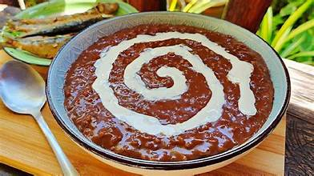

Champorado
Champorado is a sweet chocolate rice porridge that uses sweet glutinous rice (locally known as malagkit) and cocoa powder as main ingredients. A more traditional approach would be using tableya (pure cocoa blocks) instead of cocoa powder.
- 8 tbsp cocoa powder or about 4 pieces tableya
- 1 cup glutinous rice malagkit
- 1/2 cup sugar
- 3 1/2 cups water
- condensed milk optional
- Step 1. Pour 2 1/2 cups of water in a pot and bring to a boil
- Step 2. Put-in the glutinous rice and allow water to re-boil for a few minutes
- Step 3. Dilute the cocoa powder in 1 cup warm water then pour-in the pot. Stir continuously
- Step 4. Once the glutinous rice is cooked (about 12 to 18 minutes of cooking with constant stirring), add the sugar and cook for another 5 minutes or until the texture becomes thick.
- Step 5. Remove from the pot and place in a serving bowl.
- Step 6. Serve hot with a swirl of condensed milk on top.